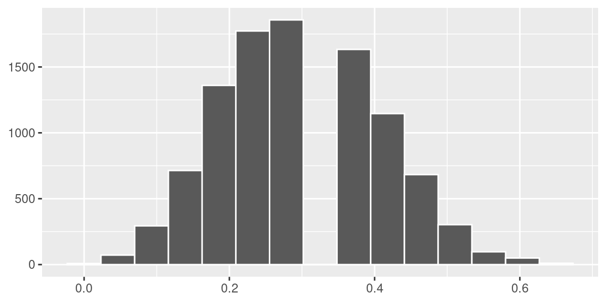
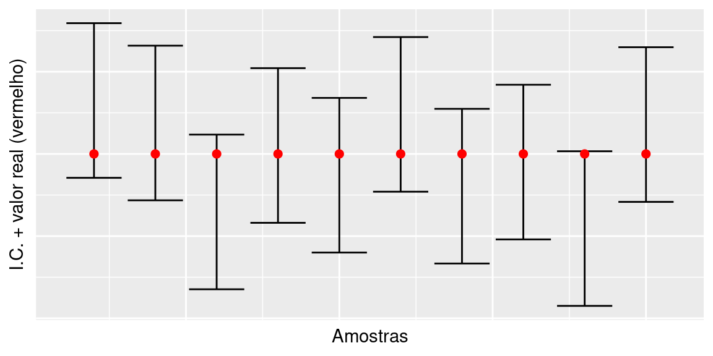
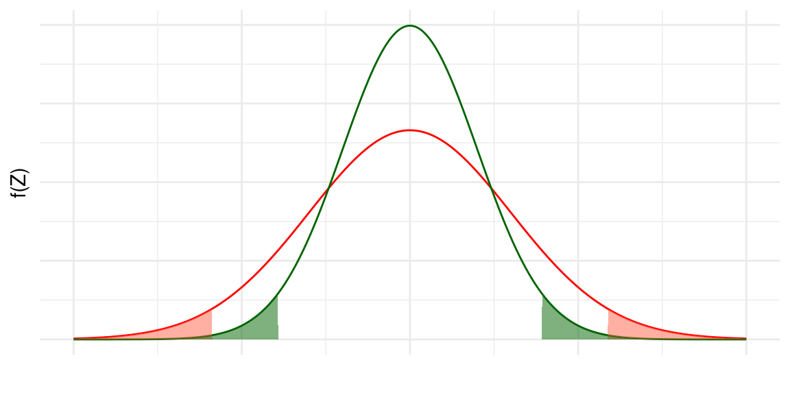

Capítulo 5 Intervalo de Confiança
5.1 Introdução
Neste capítulo você aprenderá um método muito importante de estimação de parâmetros. Vimos anteriormente que a média amostral \(\bar X\) é um bom estimador da média populacional \(\mu\). Mas vimos, também, que existe uma variabilidade nos valores de \(\bar X\), ou seja, cada amostra dá origem a um valor diferente do estimador. Uma maneira de informar sobre esta variabilidade é através da estimação por intervalos.
5.2 Ideias Básicas
O objetivo central da Inferência Estatística é obter informações para uma população a partir do conhecimento de uma única amostra. Em geral, a população é representada por uma variável aleatória \(X\), com função de distribuição ou densidade de probabilidade \(f_X\) . Dessa população, então, extrai-se uma amostra aleatória simples com reposição, que dá origem a um conjunto \(X_1, X_2, \ldots, X_n\) de \(n\) variáveis aleatórias independentes e identicamente distribuídas, todas com a mesma distribuição \(f_X\).
Se \(f_X\) depende de um ou mais parâmetros, temos que usar a informação obtida a partir da amostra para estimar esses parâmetros, de forma a conhecermos a distribuição. Vimos, por exemplo, que a média amostral \(\bar X\) é um bom estimador da média populacional \(\mu\), no sentido de que ela tende a “acertar o alvo” da verdadeira média populacional, isto é, a média amostral é um estimador não-viesado da média populacional. Mas vimos, também, que existe uma variabilidade nos valores de \(\bar X\), ou seja, cada amostra dá origem a um valor diferente do estimador. Para algumas amostras, \(\bar X\) será maior que \(\mu\), para outras será menor e para outras será igual.
Na prática, temos apenas uma amostra e, assim, é importante que se dê alguma informação sobre essa possível variabilidade do estimador. Ou seja, é importante informar o valor do estimador \(\hat \theta\) obtido com uma amostra específica, mas é importante informar também que o verdadeiro valor do parâmetro \(\theta\) poderia estar num determinado intervalo, digamos, no intervalo \(\left[\hat\theta-\varepsilon,\hat\theta+\varepsilon\right]\). Dessa forma, estamos informando a nossa margem de erro no processo de estimação; essa margem de erro é consequência do processo de seleção aleatória da amostra.
O que vamos estudar agora é como obter esse intervalo, de modo a “acertar na maioria das vezes,” isto é, queremos um procedimento que garanta que, na maioria das vezes (ou das amostras possíveis), o intervalo obtido conterá o verdadeiro valor do parâmetro. A expressão “na maioria das vezes” será traduzida como “probabilidade alta.” Dessa forma, estaremos lidando com afirmativas do seguinte tipo:
A interpretação correta de tal afirmativa é a seguinte: se \(1-\alpha=0,95\), por exemplo, então isso significa que o procedimento de construção do intervalo é tal que, em 95% das possíveis amostras, o intervalo \(\left[\hat\theta-\varepsilon,\hat\theta+\varepsilon\right]\) obtido conterá o verdadeiro valor do parâmetro.
Note, no exemplo abaixo, que cada amostra resulta em um intervalo diferente, mas em média, em 95% das amostras, o intervalo contém o verdadeiro valor do parâmetro (em vermelho).

O valor \(1 - \alpha\) é chamado nível de confiança, enquanto o valor \(\alpha\) é conhecido como nível de significância. O intervalo \(\left[\hat\theta-\varepsilon;\hat\theta + \varepsilon\right]\) é chamado de intervalo de confiança de nível de confiança \(1 - \alpha\).
Tendo clara a interpretação do intervalo de confiança, podemos resumir a frase acima da seguinte forma:
\[P\left(\theta\in[\hat\theta-\varepsilon;\hat\theta+\varepsilon]\right)=1-\alpha\]
Mais uma vez, a probabilidade se refere à probabilidade dentre as diversas possíveis amostras, ou seja, a probabilidade está associada à distribuição amostral de \(\hat \theta\). Note que os limites do intervalo dependem de \(\hat theta\), que depende da amostra sorteada, ou seja, os limites do intervalo de confiança são variáveis aleatórias. Cada amostra dá origem a um intervalo diferente, mas o procedimento de obtenção dos intervalos garante probabilidade \(1 - \alpha\) de acerto.
5.3 Média da \(N(\mu,\sigma^2)\), \(\sigma^2\) conhecido
Vamos agora introduzir os métodos para obtenção do intervalo de confiança para a média de uma população. Como visto, a média populacional é um parâmetro importante que pode ser muito bem estimado pela média amostral \(\bar X\). Para apresentar as idéias básicas, vamos considerar um contexto que é pouco frequente na prática. O motivo para isso é que, em termos didáticos, a apresentação é bastante simples. Como o fundamento é o mesmo para contextos mais gerais, essa abordagem se justifica.
Consideremos uma população descrita por uma variável aleatória normal com média \(\mu\) e variância \(\sigma^2\): \(X\sim N(\mu,\sigma^2)\). Vamos supor que o valor de \(\sigma^2\) seja conhecido e que nosso interesse seja estimar a média \(\mu\) a partir de uma amostra aleatória simples \(X_1,\ldots,X_n\). Como visto anteriormente, a distribuição amostral de \(\bar X\) é normal com média \(\mu\) e variância \(\frac{\sigma^2}{n}\), ou seja
\[X\sim N(\mu,\sigma^2)\rightarrow \bar X \sim N\left(\mu,\frac{\sigma^2}{n}\right)\]
Da definição de distribuição amostral, isso significa que os diferentes valores de \(\bar X\) obtidos a partir das diferentes possíveis amostras se distribuem normalmente em torno de \(\mu\) com variância \(\frac{\sigma^2}{n}\).
Das propriedades da distribuição normal, resulta que
\[Z=\frac{\bar X-\mu}{\sqrt{\frac{\sigma^2}{n}}}\sim N(0,1),\]
ou equivalentemente,
\[Z=\sqrt{n}\frac{\bar X-\mu}{\sigma}\sim N(0,1).\]
5.3.1 Notação
Vamos estabelecer a seguinte notação: vamos indicar por \(z_\alpha\) a abscissa da curva normal padrão que deixa probabilidade (área) igual a \(\alpha\) acima dela. Veja a Figura abaixo. Temos, então, que \(P(Z > z_\alpha)= \alpha\). Essa abscissa \(z_\alpha\) é normalmente chamada de valor crítico.

Consideremos, agora, o valor crítico \(z_\frac{\alpha}{2}\), veja a Figura abaixo. Daí podemos ver que, se \(Z\sim N(0,1)\), então
\[P\left(-z_\frac{\alpha}{2}\leq Z \leq z_\frac{\alpha}{2}\right)=1-\alpha\]
Note que isso vale para a distribuição normal padrão, em geral. Então, usando os resultados anteriories obtemos que
\[P\left(-z_\frac{\alpha}{2}\leq \sqrt{n}\frac{\bar X-\mu}{\sigma} \leq z_\frac{\alpha}{2}\right)=1-\alpha\]
Mas isso é equivalente a
\[P\left(-z_{\frac{\alpha}{2}}\frac{\sigma}{\sqrt{n}}\leq \bar X-\mu \leq z_{\frac{\alpha}{2}}\frac{\sigma}{\sqrt{n}}\right)= 1-\alpha\]
\[P\left(-\bar X-z_{\frac{\alpha}{2}}\frac{\sigma}{\sqrt{n}}\leq -\mu \leq -\bar X + z_{\frac{\alpha}{2}}\frac{\sigma}{\sqrt{n}}\right)= 1-\alpha\]
\[P\left(\bar X - z_{\frac{\alpha}{2}}\frac{\sigma}{\sqrt{n}} \leq \mu \leq \bar X+z_{\frac{\alpha}{2}}\frac{\sigma}{\sqrt{n}}\right) = 1-\alpha\]
Note que a última expressão nos diz que
\[P\left(\mu \in \left[\bar X-z_{\frac{\alpha}{2}}\frac{\sigma}{\sqrt{n}};\bar X+z_{\frac{\alpha}{2}}\frac{\sigma}{\sqrt{n}}\right]\right)=1-\alpha\]
Mas essa é exatamente a forma geral de um intervalo de confiança, conforme explicitado. Temos, então, a seguinte conclusão:
Seja \(X\sim N(\mu, \sigma^2)\) uma população normal com variância \(\sigma^2\) conhecida. Se \(X_1, X_2,\ldots , X_n\) é uma amostra aleatória dessa população, então o intervalo de confiança de nível de confiança \(1-\alpha\) para a média populacional \(\mu\) é dado por
\[\left[\bar X-z_{\frac{\alpha}{2}}\frac{\sigma}{\sqrt{n}};\bar X+z_{\frac{\alpha}{2}}\frac{\sigma}{\sqrt{n}}\right],\]
onde \(z_{\frac{\alpha}{2}}\) é a abcissa da curva normal padrão que deixa a área \(\frac{\alpha}{2}\) acima dela.
5.4 Margem de Erro
O intervalo de confiança para \(\mu\) pode ser escrito na forma \(\left[\bar X - \varepsilon;\bar X + \varepsilon \right]\) onde \(\varepsilon=z_{\frac{\alpha}{2}}\frac{\sigma}{\sqrt{n}}\) é a margem de erro.
Analisando a margem de erro, podemos ver que ela depende diretamente do valor crítico e do desvio padrão populacional e é inversamente proporcional ao tamanho da amostra.
Na Figura abaixo ilustra-se a relação de dependência da margem de erro em relação ao desvio padrão populacional \(\sigma\). Temos aí duas distribuições amostrais centradas na mesma média e baseadas em amostras de mesmo tamanho. Nas duas distribuições a área total das caudas sombreadas é \(\alpha\), de modo que o intervalo limitado pelas linhas verticais é o intervalo de confiança de nível de confiança \(1-\alpha\). Para a distribuição mais dispersa, isto é, com \(\sigma\) maior, o comprimento do intervalo é maior. Esse resultado deve ser intuitivo: se há mais variabilidade na população, a nossa margem de erro tem que ser maior, mantidas fixas as outras condições (tamanho de amostra e nível de confiança).
Por outro lado, se mantivermos fixos o tamanho da amostra e o desvio padrão populacional, é razoável também esperar que a margem de erro seja maior para um nível de confiança maior. Ou seja, se queremos aumentar a probabilidade de acerto, é razoável que o intervalo seja maior. Aumentar a probabilidade de acerto significa aumentar o nível de confiança, o que acarreta em um valor crítico \(z_{\frac{\alpha}{2}}\) maior.
Finalmente, mantidos o mesmo desvio padrão populacional e o mesmo nível de confiança, quanto maior o tamanho da amostra, mais perto vamos ficando da população e, assim, vai diminuindo a nossa margem de erro.
5.5 Introdução
Neste capítulo você completará seu estudo básico sobre intervalos de confiança para a média de uma população, analisando o problema de estimação da média de uma população normal quando não se conhece a variância desta população. Você verá que, neste caso, é necessário estimar essa variância e isso introduz mais uma fonte de variabilidade nas nossas estimativas: com uma única amostra, temos que estimar a média e a variância da população. O procedimento é simples e análogo aos casos anteriores vistos nos capítulos amteriores; o que muda é a distribuição amostral do estimador \(\bar X\). Em vez de usarmos a distribuição normal para determinar os valores críticos, usaremos a distribuição \(t\) de Student.
5.6 Ideias Básicas
Considere uma população descrita por uma variável aleatória normal com média \(\mu\) e variância \(\sigma^2\): \(X\sim N(\mu,\sigma^2)\). Nosso interesse é estimar a média \(\mu\) a partir de uma amostra aleatória simples \(X_1,X_2,\ldots,X_n\). Como visto anteriormente, a distribuição amostral de \(\bar X\) é normal com média \(\mu\) e variância \(\frac{\sigma^2}{n}\), ou seja
\[X\sim N(\mu,\sigma^2)\rightarrow \bar X \sim N\left(\mu,\frac{\sigma^2}{n}\right)\] Asso, se o valor de \(\sigma\) é conhecido, resulta que
\[Z=\sqrt{n}\frac{\bar X-\mu}{\sigma}\sim N(0,1)\]
e esse resultado foi utilizado na construção do intervalo de confiança para a média de uma população normal com variância conhecida, fornecendo o seguinte intervalo:
\[\left[\bar X-z_{\frac{\alpha}{2}}\frac{\sigma}{\sqrt{n}};\bar X+z_{\frac{\alpha}{2}}\frac{\sigma}{\sqrt{n}}\right].\]
Suponhamos, agora, que a variância \(\sigma^2\) não seja conhecida. Neste caso, temos que estimá-la (\(S^2\)) com os dados amostrais. Foi demostrado que
\[S^2=\frac{1}{n-1}\sum_{i=1}^{n}(X_i-\bar X)^2=\frac{1}{n-1}\left[\sum_{i=1}^{n}X_i^2-n\bar X^2\right]\]
é um estimador não viesado para \(\sigma^2\). Isso significa que, se calculássemos o valor de \(S^2\) para cada uma das possíveis amostras aleatórias simples de tamanho \(n\), a média desses valores seria igual a \(\sigma^2\). Dessa forma, \(S^2\) é um “bom” estimador de \(\sigma^2\) e podemos usá-lo como uma estimativa pontual de \(\sigma^2\). Como o desvio padrão é a raiz quadrada da variância, é natural perguntar: \(S\) é um “bom” estimador de \(\sigma\), ou seja, \(S\) é um estimador não-viesado de \(\sigma\)? A resposta é NÃO, mas, para grandes amostras, o viés é pequeno, de modo que, em geral, usa-se \(S\) como estimador de \(\sigma\). Sendo assim, é natural pensarmos em substituir o valor de \(\sigma\) por \(S\) na expressão da Normal \(Z\) e utilizarmos a estatística
\[T=\sqrt{n}\frac{\bar X-\mu}{S}\]
na construção de intervalos de confiança para \(\mu\). Isso é exatamente o que faremos, mas, ao introduzirmos \(S\) no lugar de \(\sigma\), a distribuição amostral de \(T\) deixa de ser normal e passa a ser uma distribuição \(t\) de Student.
5.6.1 Média da \(N(\mu,\sigma^2)\), \(\sigma^2\) desconhecido
O intervalo de confiança para a média de uma população normal com variância desconhecida é obtido com base no seguinte resultado:
\[T=\sqrt{n}\frac{\bar X-\mu}{S}\sim t_{n-1},\]
onde \(S^2=\frac{1}{n-1}\sum_{i=1}^{n}(X_i-\bar X)^2=\frac{1}{n-1}\left[\sum_{i=1}^{n}X_i^2-n\bar X^2\right].\)
O número de graus de liberdade \(gl=n-1\) resulta do fato de que, na soma que define \(S^2\), há apenas \(n-1\) parcelas independentes, ou seja, dados \(S^2\) e \(n-1\) das parcelas \((X_i - \bar X)^2\), a \(n\)-ésima parcela fica automaticamente determinada.
Usando a simetria da densidade \(t\), temos o seguinte resultado:
\[P\left(-t_{n,\alpha/2}\leq t_{n} \leq t_{n,\alpha/2}\right)=1-\alpha\]

Note que isso vale para a distribuição \(t\) de student, em geral. Então, usando os resultados anteriories obtemos que
\[P\left(-t_{n-1,\alpha/2}\leq \sqrt{n}\frac{\bar X-\mu}{S} \leq t_{n-1,\alpha/2}\right)=1-\alpha\]
Mas isso é equivalente a
\[P\left(-t_{n-1,\alpha/2}\frac{S}{\sqrt{n}}\leq \bar X-\mu \leq t_{n-1,\alpha/2}\frac{S}{\sqrt{n}}\right)=1-\alpha\] \[P\left(\bar X-t_{n-1,\alpha/2}\frac{S}{\sqrt{n}}\leq \mu \leq \bar X + t_{n-1,\alpha/2}\frac{S}{\sqrt{n}}\right)=1-\alpha\]
Note que a última expressão nos diz que
\[P\left(\mu \in \left[\bar X-t_{n-1,\alpha/2}\frac{S}{\sqrt{n}};\bar X+t_{n-1,\alpha/2}\frac{S}{\sqrt{n}}\right]\right)=1-\alpha\]
Mas essa é exatamente a forma geral de um intervalo de confiança, conforme explicitado. Temos, então, a seguinte conclusão:
Seja \(X\sim N(\mu, \sigma^2)\) uma população normal com variância \(\sigma^2\) desconhecida. Se \(X_1, X_2,\ldots , X_n\) é uma amostra aleatória dessa população, então o intervalo de confiança de nível de confiança \(1-\alpha\) para a média populacional \(\mu\) é dado por
\[\left[\bar X-t_{n-1,\alpha/2}\frac{S}{\sqrt{n}};\bar X+t_{n-1,\alpha/2}\frac{S}{\sqrt{n}}\right],\]
onde \(t_{n-1,\alpha/2}\) é o valor crítico da distribuição \(t\) de student com \(n-1\) graus de liberdade que deixa a área \(\frac{\alpha}{2}\) acima dela.
5.7 Margem de Erro
Note, mais uma vez, a forma do intervalo de confiança:
\[\bar X \pm\varepsilon,\]
onde a margem de erro \(\varepsilon\), agora é definida em termos do valor crítico da distribuição \(t\) e do erro padrão estimado de \(\bar X\):
\[\varepsilon=t_{n-1,\alpha/2}\frac{S}{\sqrt{n}}\].
5.8 Introdução
Anteriormente, foram apresentadas as idéias básicas da estimação por intervalos de confiança. Para ilustrar o princípio utilizado na construção de tais intervalos, consideramos a situação especial de estimação da média de uma população normal com variância conhecida. Neste caso, a distribuição amostral da média amostral é normal e foi com base nessa distribuição amostral normal que obtivemos o intervalo de confiança.
No primeiro momento desta aula usaremos o teorema limite central, que garante que a distribuição amostral da proporção amostral pode ser aproximada por uma distribuição normal, desde que utilizemos amostras grandes.
5.9 Intervalo de confiança para a proporção populacional
5.9.1 Ideias Básicas
O contexto de interesse é o seguinte: temos uma população em que cada elemento é classificado de acordo com a presença ou ausência de determinada característica. Em termos de variável aleatória, essa população é representada por uma v.a. de Bernoulli, isto é:
\[ X=\begin{cases} 1,~\text{se elemento possui a característica de interesse}\\ 0,~\text{se elemento não possui a caracaterística de interesse} \end{cases} \]
Então, \(P(X = 1) = p\), \(E(X) = p\) e \(V(X) = p(1 - p)\). O parâmetro \(p\) é também a proporção de elementos da população que possuem a caracterísitca de interesse. Em geral, esse parâmetro é desconhecido e precisamos estimá-lo a partir de uma amostra.
Suponha, então, que dessa população seja extraída uma amostra aleatória simples \(X_1, X_2, \ldots, X_n com reposição\). Vimos que a proporção \(\hat P\) de elementos na amostra que possuem a característica de interesse, definida por
\[\hat P = \frac{S_n}{n}=\frac{X_1+X_2+\ldots+X_n}{n}\]
é um estimador não-viesado para \(p\) com variância \(\frac{p(1-p)}{n}\). Mais precisamente,
\[E(\hat P)=p\]
\[V(\hat P)=\frac{p(1-p)}{n}\]
Como a proporção amostral é uma média de uma amostra aleatória simples de uma população com distribuição de Bernoulli com parâmetro \(p\), o Teorema Limite Central nos diz que a distribuição de \(\hat P\) se aproxima de uma nornal com média \(p\) e variância \(\frac{p(1-p)}{n}\).
Resumindo, temos o seguinte resultado:
\[\hat p \sim N\left(p,\frac{p(1-p)}{n}\right).\]
Usando as propriedades da distribuição normal, temos que
\[\frac{\hat P - p}{\sqrt{\frac{p(1-p)}{n}}}\sim N(0,1)\]
ou equivalentemente
\[\sqrt{n}\frac{\hat P - p}{\sqrt{p(1-p)}}\sim N(0,1)\]
Vamos ver, agora, como usar esse resultado para obter um intervalo de confiança para a verdadeira proporção populacional \(p\).
5.9.2 Construção do IC
O procedimento de construção do intervalo de confiança para a proporção populacional é totalmente análogo ao do intervalo de confiança para a média de uma população normal com variância conhecida, visto anteriormente. Assim, iremos usar a mesma notação, a saber: vamos representar por \(z_\alpha\) a abscissa da curva normal padrão que deixa probabilidade (área) \(\alpha\) acima dela. Como visto, temos o seguinte resultado, onde \(Z\sim N(0,1)\):
\[P\left(-z_\frac{\alpha}{2}\leq Z \leq z_\frac{\alpha}{2}\right)=1-\alpha\]
Como o resultado acima vale para qualquer variável aleatória \(N(0,1)\), podemos usar para obter
\[P\left(-z_{\frac{\alpha}{2}}\leq \frac{\hat P - p}{\sqrt{\frac{p(1-p)}{n}}} \leq z_{\frac{\alpha}{2}}\right)=1-\alpha\]
e, portanto
\[P\left(-z_{\frac{\alpha}{2}}\sqrt{\frac{p(1-p)}{n}} \leq \hat P - p \leq z_{\frac{\alpha}{2}}\sqrt{\frac{p(1-p)}{n}}\right)=1-\alpha\]
\[P\left(-\hat P -z_{\frac{\alpha}{2}}\sqrt{\frac{p(1-p)}{n}} \leq - p \leq -\hat P + z_{\frac{\alpha}{2}}\sqrt{\frac{p(1-p)}{n}}\right)=1-\alpha\]
\[P\left(\hat P - z_{\frac{\alpha}{2}}\sqrt{\frac{p(1-p)}{n}} \leq p \leq \hat P + z_{\frac{\alpha}{2}}\sqrt{\frac{p(1-p)}{n}}\right)=1-\alpha\] Como no caso da média, chegamos a uma expressão do seguinte tipo:
\[P(\hat P -\varepsilon\leq p\leq\hat P + \varepsilon)=1-\alpha\]
onde \(\varepsilon=z_{\frac{\alpha}{2}}\sqrt{\frac{p(1-p)}{n}}\)
Analisando a margem de erro, podemos ver uma diferença fundamental entre o IC para a proporção e para a média: a margem de erro da proporção amostral depende do parâmetro desconhecido \(p\). Na prática, para construir o intervalo de confiança, temos que substituir esse valor por alguma estimativa.
Existem 3 abordagens possíveis:
Usar a própria proporção amostral observada; nesse caso, o intervalo de confiança seria: \[\hat p \pm z_{\frac{\alpha}{2}}\sqrt{\frac{\hat p(1-\hat p)}{n}}\]
Usar o intervalo de confiança conservador, ou seja, usar o maior valor possível para \(z_{\frac{\alpha}{2}}\sqrt{\frac{\hat p(1-\hat p)}{n}}\) para um dado \(n\), o que equivale a obter o intervalo de confiança com o maior comprimento possível. Como o comprimento do intervalo é diretamente proporcional a \(\sqrt{p(1-p)}\) ou equivalentemente a \(p(1-p)\), \(p=0.5\) maxima esta função.
Neste caso, o o intervalo de confiança se torna:
\[\hat p \pm z_{\frac{\alpha}{2}}\sqrt{\frac{0.5\times 0.5}{n}} = \hat p \pm z_{\frac{\alpha}{2}}\frac{0.5}{\sqrt{n}}\]
- Usar algum valor auxiliar \(\hat p_0\) ou estimativa prévia, obtida de outras fontes ou de uma amostra piloto:
\[\hat p \pm z_{\frac{\alpha}{2}}\sqrt{\frac{\hat p_0(1-\hat p_0)}{n}}\]
Seja \(X\sim Bernoulli(p)\). Se \(X_1,X_2,\ldots,X_n\) é uma amostra aleatória dessa população, então o intervalo de confiança de nível de confiança \(1-\alpha\) para a proporção populacional \(p\) é dado por
\[\left[\hat P - z_{\frac{\alpha}{2}}\sqrt{\frac{\hat p_0(1-\hat p_0)}{n}};\hat P + z_{\frac{\alpha}{2}}\sqrt{\frac{\hat p_0(1-\hat p_0)}{n}}\right],\]
onde \(z_{\frac{\alpha}{2}}\) é a abcissa da curva normal padrão que deixa a área \(\frac{\alpha}{2}\) acima dela e \(\hat p_0\) é alguma estimativa para o verdadeiro valor de \(p\).
5.9.3 Determinação do tamanho da amostra
Uma questão que se coloca freqüentemente é: qual o tamanho da amostra necessário para se estimar uma proporção \(p\) com uma margem de erro \(\varepsilon\) e nível de confiança \(1-\alpha\)? Vamos analisar a expressão da margem de erro:
\[\varepsilon=z_{\frac{\alpha}{2}}\sqrt{\frac{p(1-p)}{n}}\]
Resolvendo para \(n\), obtemos que
\[\sqrt{n}=z_{\frac{\alpha}{2}}\frac{\sqrt{p(1-p)}}{\varepsilon}\]
ou
\[n=p(1-p)\left(\frac{z_{\frac{\alpha}{2}}}{\varepsilon}\right)^2\]
Vemos, então, que \(n\) é diretamente proporcional a \(p(1-p)\), ou seja, quanto maior \(p(1-p)\), maior será o tamanho da amostra \(n\). Na prática, não conhecemos \(p\) (na verdade, estamos querendo estimar esse parâmetro). Então, para determinar o tamanho de amostra necessário para uma margem de erro e um nível de confiança dados, podemos considerar o pior caso, ou seja, podemos tomar o maior valor possível de \(p(1 - p)\) e calcular o tamanho da amostra com base nesse pior caso, que ocorre quando \(p = 0,5\). É claro que essa é uma escolha conservadora, que em alguns casos pode levar a um tamanho de amostra desnecessariamente grande. Usando esta estimativa para \(p\), obtemos que
\[n=\left(0,5\times \frac{z_{\frac{\alpha}{2}}}{\varepsilon}\right)^2\]
5.10 Intervalo de confiança para a variância da \(N(\mu,\sigma^2)\)
Nesta parte você completará seu estudo básico sobre intervalos de confiança, analisando o problema de estimação da variância de uma população normal. Como antes, este intervalo se baseará na distribuição amostral de um estimador não-viesado para \(\sigma^2\), a saber, \(S^2\). Como a variância é um número não negativo, essa distribuição não é simétrica e está definida apenas para valores não-negativos.
5.10.1 Ideias básicas
O contexto subjacente é o seguinte: a partir de uma amostra aleatória simples \(X_1,X_2,\ldots,X_n\) retirada de uma população normal com média \(\mu\) e variância \(\sigma^2\) queremos construir um intervalo de confiança para \(\sigma^2\). A hipótese de normalidade da população é fundamental aqui. Assim como no caso da média, temos que usar a distribuição amostral de algum estimador. Neste caso, o estimador é \(S^2\) e o resultado importate é o seguinte: \(\frac{(n-1)S^2}{\sigma^2}\) tem distribuição qui-quadrado com \(n-1\) graus de liberdade:
\[\frac{(n-1)S^2}{\sigma^2}\sim\chi^2_{n-1}\]
5.10.2 Construção do IC
Como no caso da distribuição \(t\)-Student e também da distribuição Normal, vamos definir o valor crítico \(\chi^2_{n;\alpha}\) como a abscissa da distribuição qui-quadrado com \(n\) graus de liberdade que deixa probabilidade \(\alpha\) acima dela.
Com essa definição, podemos ver que a abscissa \(\chi^2_{n;\alpha/2}\) deixa probabilidade \(\alpha/2\) acima dela e a abcissa \(\chi^2_{n;1-\alpha/2}\) deixa probabilidade \(\alpha/2\) abaixo dela.
Logo,
\[P\left(\chi^2_{n;\frac{\alpha}{2}}\leq \chi^2_{n} \leq \chi^2_{n;1-\frac{\alpha}{2}}\right)=1-\alpha\]
Como o resultado acima vale para qualquer distribuição qui-quadrado, podemos usar o resultado anterior para escrever
\[P\left(\chi^2_{n-1;\frac{\alpha}{2}}\leq \frac{(n-1)S^2}{\sigma^2} \leq \chi^2_{n-1;1-\frac{\alpha}{2}}\right)=1-\alpha\]
Daí resulta que
\[P\left(\frac{\chi^2_{n-1;\frac{\alpha}{2}}}{(n-1)S^2}\leq \frac{1}{\sigma^2} \leq \frac{\chi^2_{n-1;1-\frac{\alpha}{2}}}{(n-1)S^2}\right)=1-\alpha\]
\[P\left(\frac{(n-1)S^2}{\chi^2_{n-1;1-\frac{\alpha}{2}}}\leq \sigma^2 \leq \frac{(n-1)S^2}{\chi^2_{n-1;\frac{\alpha}{2}}}\right)=1-\alpha\]
e esse é o intervalo de confiança para a variância de uma população normal.
Seja \(X\sim N(\mu,\sigma^2)\) uma população normal. Se \(X_1,X_2,\ldots,X_n\) é uma amostra aleatória dessa população, então o intervalo de confiança de nível de confiança \(1-\alpha\) para a variância populacional \(\sigma^2\) é dado por
\[\left[\frac{(n-1)S^2}{\chi^2_{n-1;1-\frac{\alpha}{2}}};\frac{(n-1)S^2}{\chi^2_{n-1;\frac{\alpha}{2}}}\right],\]
onde \(\chi^2_{n-1;\frac{\alpha}{2}}\) é o valor crítico da distribuição qui-quadrado com \(n-1\) graus de liberdade que deixa a área \(\frac{\alpha}{2}\) abaixo dela e \(\chi^2_{n-1;1-\frac{\alpha}{2}}\) é o valor crítico da distribuição qui-quadrado com \(n-1\) graus de liberdade que deixa a área \(\frac{\alpha}{2}\) acima dela.